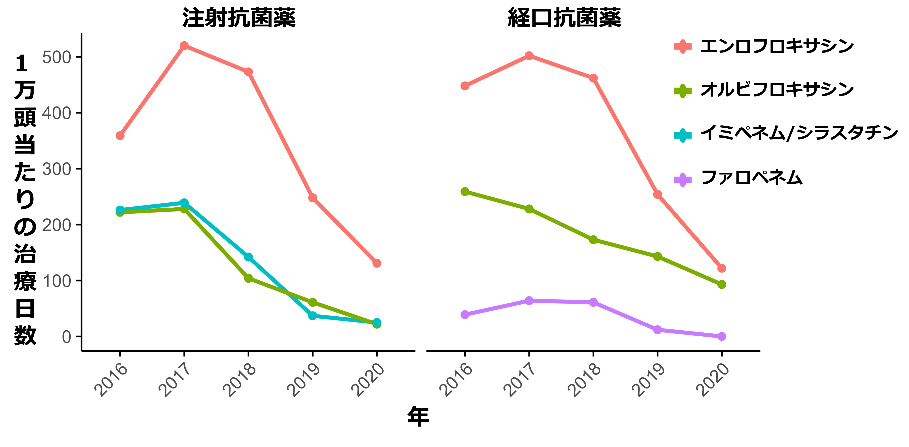
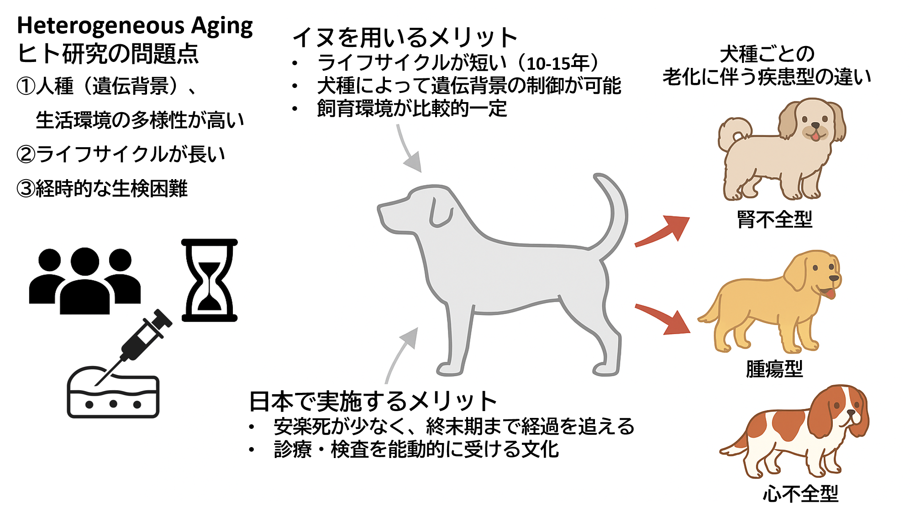
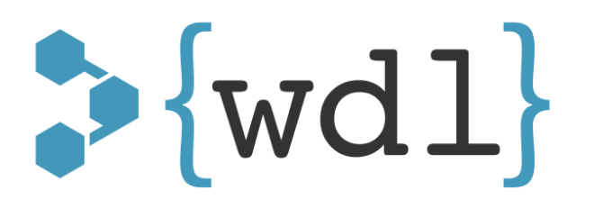

ABOUT
茂木 朋貴 (Tomoki Motegi)
獣医師 Doctor of Veterinary Medicine
博士(獣医学) Doctor of Philosophy in Veterinary Medicine
東京農工大学 獣医分子病態治療学研究室（Veterinary Clinical Genetics and Informatics）主催
私は小動物臨床医でありながら、遺伝子解析を専門とする研究室を主催する教員でもあります。ゲノム上における多型の研究経験から、疾患とゲノム多型・変異、エピゲノム変化、遺伝子発現変動を駆使して、あらゆる生物における疾患の病因を解明することを目指しています。
I am a veterinary physician-scientist pursuing a career path as a laboratory-based investigator. My initial postdoctoral training focused on investigating the influence of rare variants in rheumatoid arthritis. This sparked my profound interest in genomic research, leading me to explore germline variant and differential expression analyses to understand the etiologies of various diseases..
学生・大学院生の募集
東京農工大および岩手大学の共同獣医学科学部生が配属可能です。
興味のある学生さんは、ぜひ一度見学に来てください。
本研究室の研究テーマに興味を持ち、熱意を持って研究に取り組んでくれる大学院生を、分野を問わず歓迎いたします。
◇農学専攻国際イノベーション農学コース（修士課程）
◇共同獣医学専攻（4年制博士課程）
→募集要項はこちら
日本学術振興会特別研究員（DC,PD）などフェローシップ申請のサポートも行いますので、興味のある方はまずはご相談ください
Training
- 2022-2025 Boston University Chobanian & Avedisian School of Medicine, Section of Computational Biomedicine (Postdoctoral Fellow)
- 2018-2022 The University of Tokyo Veterinary Medical Center (Neurology, Endocrinology, Urology)
- 2017-2018 RIKEN, IMS (Postdoctoral Fellow)
Education
- 2013-2017 The Univertity of Tokyo (PhD course)
- 2008-2013 Iwate University (Bachelor of Veterinary Science)
- 2005-2008 Toho University (Bachelor of Molecular Biology)
Fellowship
- 2015-2017 JSPS Research Fellowship for Young Scientists DC2
Keywords（研究領域）
Genetics（遺伝学）, Comparative Oncology（比較腫瘍学）, Infection Diseases（感染症）, Aging（老化）......
RESEARCH
研究テーマ
cfDNAを用いたマルチオミクス解析
病的組織の遺伝学的異常を捉えることで治療標的を見つけられますが、手術で取得することはなかなか大変です。そこで病的組織から出てきたゲノムDNA（セルフリーDNA; cfDNA）を解析することで、元の組織における変化を捉えることに挑戦しています。cfDNAは通常の組織から得られるゲノムDNAよりも濃度が薄いため解析に工夫が必要となりますが、機械学習を駆使することで例えば図のように腫瘍組織におけるコピー数の変化を捉えることができます。これ以外にも腫瘍の体細胞変異やクロマチン変化、メチル化変化などを捉えられることがわかっています。この技術を駆使して特に腫瘍に起きている遺伝学的変化の全体像を捉えて治療に繋げていこうとしています。
アンチバイオグラムを用いた動物病院における抗菌薬耐性の可視化と抗菌薬使用の適正化

抗菌薬耐性（AMR）は、ヒト・動物・環境をまたぐ“ワンヘルス”の視点から世界的な公衆衛生上の課題ですが犬や猫などの伴侶動物における効果的な抗菌薬処方の削減法とその効果については未だ十分に明らかになっていませんでした。そこで病院の薬袋耐性菌の蔓延をアンチバイオグラムを用いて可視化し、その結果から効果的な介入点を見つけることで、耐性菌を減らす研究をしています。画一的な対策ありきではなく、個々の病院における事情を病院固有のデータを基に加味した戦略（データ駆動型の抗菌薬最適化戦略）を立てることでAMRの削減を行っており、全世界的に見ても日本が先だって結果を示しています。
不均一な臓器老化（Heterogeneous aging）の解明

同じ年齢の動物を比べてみると、ある個体は腫瘍、別の個体は心疾患や腎疾患など、特定の臓器障害によって生命を落とすことが多いですが、これは臓器が不均一に老化している（Heterogeneous aging）ためと考えられます。特に犬では品種ごとに「脆弱な臓器」があり、例えばゴールデン・レトリバーでは腫瘍性疾患が、キャバリアでは僧帽弁疾患が多いため、これらの臓器が早期に老化しやすいモデルと考えて、そのメカニズムをcfDNAを用いて解析することを目指しています。
PUBLICATIONS
出版物(論文等)
2025年度現在：40報
筆頭著者（Equal contributionを含む）：10報
責任著者：4報
全ての業績はこちらからご覧ください
代表的な論文は以下の通りです。
Major Publication
-
Motegi T, Fukuoka R, Tsuyuki Y, Nagakubo D, Maeda S, Yonezawa T, Nishimura R, Momoi Y. Evaluating a Targeted Antimicrobial Stewardship Program and Its Temporal Association with Resistance Trends in a Veterinary Referral Hospital. Vet Sci. 2025 Aug 8;12(8):743. doi: 10.3390/vetsci12080743. PMID: 40872694; PMCID: PMC12390016.
抗菌薬耐性（AMR）は、ヒト・動物・環境をまたぐ“ワンヘルス”の視点から世界的な公衆衛生上の課題とされ、WHO・WOAH・FAOを中心に対策が求められています。本研究では、東京大学附属動物医療センターにおいて、2016年から2024年の間に得られた約11,000件の抗菌薬処方と878件の細菌検出データをもとに、薬剤使用と耐性の関係を解析しました。独自の抗菌薬適正使用支援（ASP）プログラム（グラム染色による迅速診断、院内アンチバイオグラムを用いた薬剤選択、処方に関する教育とフィードバック）を導入したところ
• 総抗菌薬使用量は2020年までに52%減少
• カルバペネム系・フルオロキノロン系薬剤の使用が70–90%以上減少
• ESBL産生大腸菌の検出率が53% → 24%、ESBL産生Klebsiella属菌では78% → 7%に低下（2022年）
このように、介入後の使用抑制と薬剤耐性の低下が時系列的に一致しており、動物病院においても抗菌薬使用の見直しが効果的であることが明らかとなりました。 一方、メチシリン耐性ブドウ球菌については減少幅が限定的（64%→53%）であり、感染管理の強化や診断支援のさらなる充実が今後の課題とされています。
-
Kusumoto M†, Motegi T†, Uno H, Yokono M, Harada K. Pharmacokinetic-pharmacodynamic analysis of cefmetazole against extended-spectrum β-lactamase-producing Enterobacteriaceae in dogs using Monte Carlo Simulation. Front Vet Sci. 2023 Sep 28;10:1270137. doi: 10.3389/fvets.2023.1270137. PMID: 37841458; PMCID: PMC10569024.
セフメタゾールの最適投与法をマルコフ連鎖モンテカルロ法を用いて薬物動態から推定した論文（解説準備中）
-
Shitamori F†, Nonogaki A†, Motegi T†, Matsumoto Y, Sakamoto M, Tanizawa Y, Nakamura Y, Yonezawa T, Momoi Y, Maeda S. Large-scale epidemiological study on feline autosomal dominant polycystic kidney disease and identification of novel PKD1 gene variants. J Feline Med Surg. 2023 Jul;25(7):1098612X231185393. doi: 10.1177/1098612X231185393. PMID: 37489504; PMCID: PMC10812055.
猫のPDK1大規模解析論文（解説準備中）
-
Maeda S, Motegi T, Iio A, Kaji K, Goto-Koshino Y, Eto S, Ikeda N, Nakagawa T, Nishimura R, Yonezawa T, Momoi Y. Anti-CCR4 treatment depletes regulatory T cells and leads to clinical activity in a canine model of advanced prostate cancer. J Immunother Cancer. 2022 Feb;10(2):e003731. doi: 10.1136/jitc-2021-003731. PMID: 35131860; PMCID: PMC8804701.
イヌの前立腺がんの治療標的をトランスクリプトームを用いて見つけ、免疫療法の治験を実施し、ヒトまでの拡張性を示した論文（解説準備中）
-
Motegi T, Kochi Y, Matsuda K, Kubo M, Yamamoto K, Momozawa Y. Identification of rare coding variants in TYK2 protective for rheumatoid arthritis in the Japanese population and their effects on cytokine signalling. Ann Rheum Dis. 2019 Aug;78(8):1062-1069. doi: 10.1136/annrheumdis-2019-215062. Epub 2019 May 22. PMID: 31118190.
ヒト関節リウマチの原因遺伝子98個を約6000人で解析し、レアバリアントがTYK2に蓄積することから新規治療ターゲットを示した論文（解説準備中）
-
Motegi T, Tomiyasu H, Goto-Koshino Y, Takahashi M, Hiyoshi-Kanemoto S, Fujino Y, Ohno K, Tsuimoto H. Prognostic value of CD44 variant isoform expression in dogs with multicentric high-grade B-cell lymphoma. Am J Vet Res. 2018 Sep;79(9):961-969. doi: 10.2460/ajvr.79.9.961. PMID: 30153061.
イヌ多中心型大細胞性B細胞リンパ腫におけるCD44のバリアントアイソフォームの発現と予後を示した論文（解説準備中）
-
Motegi T, Katayama M, Uzuka Y, Okamura Y. Evaluation of anticancer effects and enhanced doxorubicin cytotoxicity of xanthine derivatives using canine hemangiosarcoma cell lines. Res Vet Sci. 2013 Oct;95(2):600-5. doi: 10.1016/j.rvsc.2013.06.011. Epub 2013 Jul 18. PMID: 23871419.
イヌ血管肉腫細胞株におけるカフェインを含めたメチルキサンチン誘導体の抗がん剤増強効果を示した論文（解説準備中）
OTHER WORKS
作ったものや、学会発表など
講義
学会
- Huang F, Song H, Motegi T, Mahadevan A, Mahdaviani K, Wang S, Aggarwal R, Le T, Liu H, Reichel R, Tsui M, Simon-Plumb C, Li D, Ilinski A, Codanlo N, Ozkan G, Stadnicki K, Mortazavi-Zadeh A, Gignac G, Campbell J. (3/20) Genomic analysis of cfDNA samples from Black patients with metastatic castration-resistant prostate cancer to explore gene alterations associated with tumor progression and treatment resistance. J Clin Oncol 43(16_suppl):e17060, 2025.
- Motegi T and Campbell J*. (1/2) Abstract C004: Assessing local ancestry inference using different sequencing assays and depth of coverage. Cancer Epidemiol Biomarkers Prev 32(12_Supplement): C004, 2023.
SKILL & CONTACT
お問い合わせは、
メールでお願いいたします。
Python
基本的なデータ処理から機械学習を用いた解析、ツール開発
R
コピー数異常・網羅的発現変動解析、統計解析、グラフなどを用いた視覚化
Linux
ゲノム解析・エピゲノム・発現変動解析のためのパイプラインの構築やHPCを用いた並列解析

WDL
ワークフロー記述言語を用いたパイプライン作成やBroadが提供する各種パイプラインをGrid Engine上で実行できるように改変
研究・開発
- WGSを用い生殖細胞系列多型・構造異常の解析
- SNPアレイやWESにおけるSNP情報のImputation
- cfDNAを用いたゲノム・エピゲノム解析
- WESを用いた体細胞変異・CNV解析
- RNA-seqを用いた網羅的発現変動解析(GSEAを含めた下流解析・Immune-cell decovolution.etc)
- 上記の可視化
- LDブロックレベルの祖先推定とその統合解析
その他資格など
- 第一種放射線取扱主任者試験合格
- 潜水士
- 認定ICD（日本感染症学会推薦）
DONATION
寄付について
当研究室では動物を救うための研究を進めるために寄付を募集しております。
寄付をご希望の方は以下のメールアドレスからご連絡ください
担当からご案内のメールを送らせていただきます。
tmotegi{ at }go.tuat.ac.jp
- 個人名義・法人名義のどちらのご支援でも可能です。
- 大学へのご寄付には税法上の優遇措置が適用されます。別途お送りする領収書を控除証明書として確定申告書に添付し、所轄税務署へご提出ください。